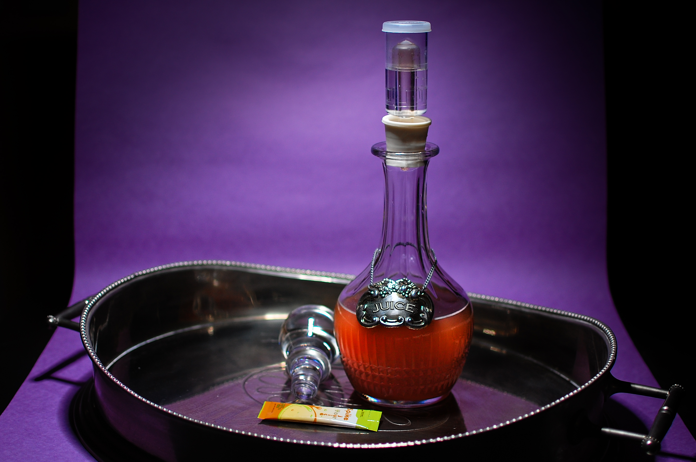

Juice to alcohol

Ingredients
- Juice with at least 20g of sugar per serving
- Champagne Yeast
- Bottle with airlock
Method
- Add juice to bottle with airlock
- Add in the packet of yeast to the juice
- Close it and leave it to ferment for atleast 72h
Return to homepage